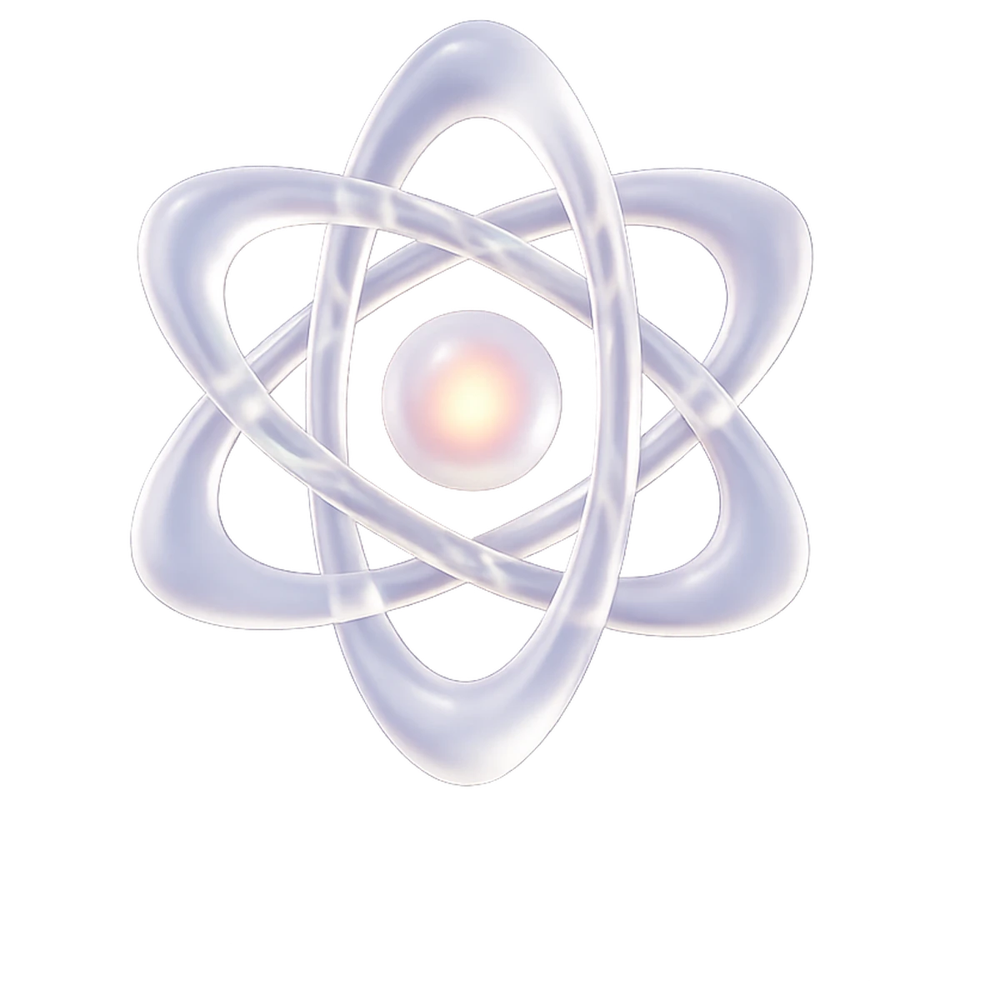

2028 수능 · 통합과학
결석하면 직접 연락하고, 틀린 문항은 유사문항으로 다시 냅니다. 가르치고 끝내지 않는 관리를 확인해 보세요.
결석하면 그날 연락이 갑니다. 보강 영상은 신청 없이 지급됩니다.
틀린 문항에서 유사문항 2개가 자동으로 만들어집니다.
성적·출결·과제 검사 결과를 따로 묻지 않아도 받습니다.
 약점 · 생명 시스템
약점 · 생명 시스템 복습 · 지구 시스템약점 · 생명 시스템복습 · 지구 시스템
복습 · 지구 시스템약점 · 생명 시스템복습 · 지구 시스템